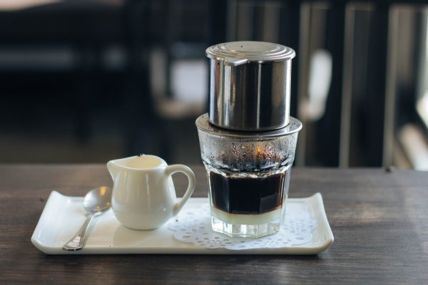

VIETNAM DRIP

Minuman tersebut berupa kopi yang diseduh menggunakan metal dripper khas Vietnam lalu dicampur dengan krimer/susu kental manis. Vietnam drip adalah metode dan alat seduh yang menghasilkan minuman dengan cara ekstraksi lewat tetesan.